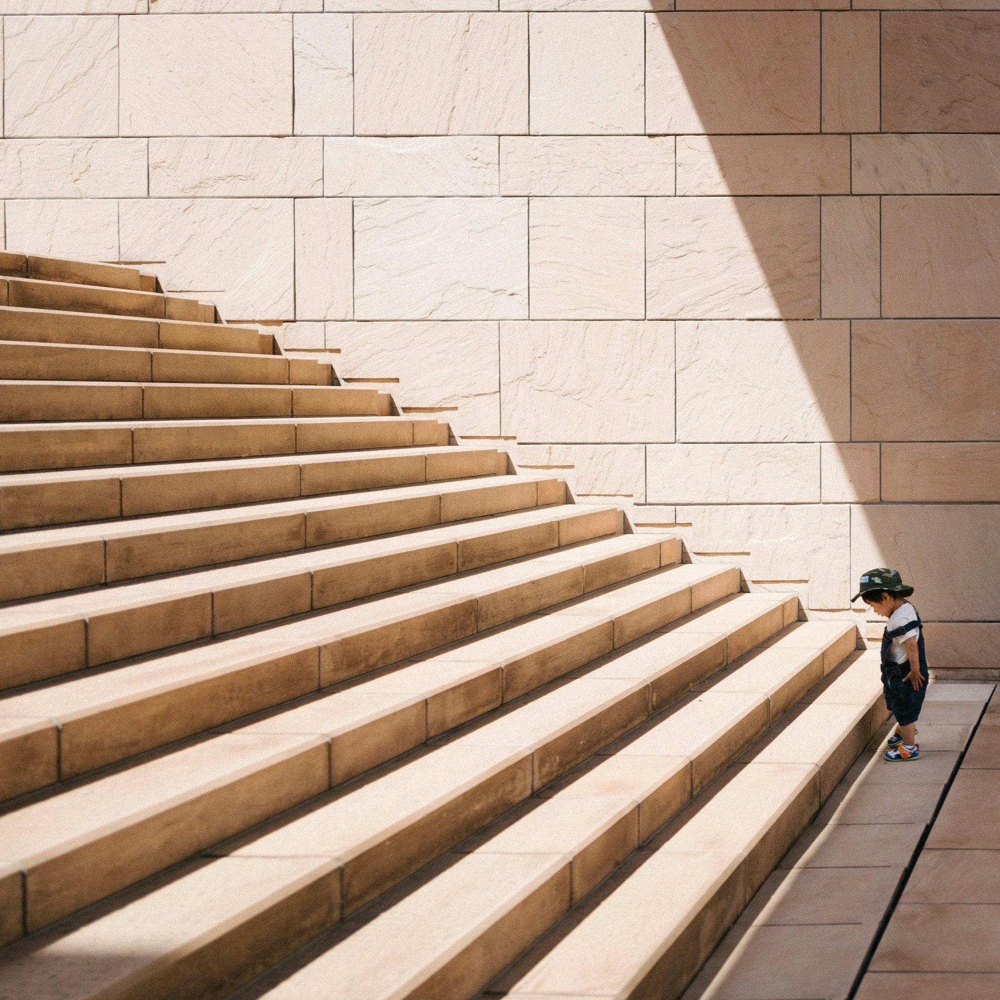

Фритрек и нулевой спринт: Подготовка к работе
начало

Это было самое начало пути. На этом этапе важно было проникнуться основами и настроиться на учёбу. И, возможно, подумать, как новые знания могут повлиять на ваше будущее.
В начале обучения мне было интересно, что нового я узнаю и какие темы мы будем изучать. Мне не было страшно и непонятно, потому что я уже давно занимаюсь версткой.